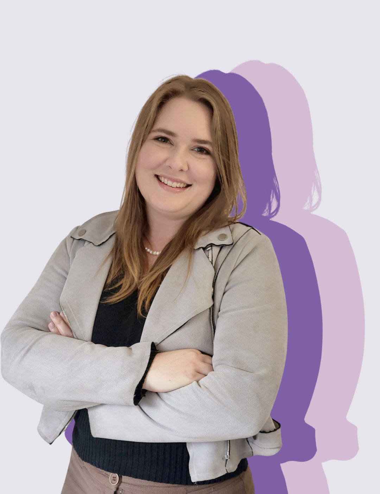

The designer
About Me

Beth Kent
UX / UI Designer · Auckland, NZ
Hi, I'm Beth! I'm a 3rd year student at Media Design School, studying interactive design. As an interactive designer, I lead with empathy and respect. While my experience is currently web and app based, my dream is to work in video game UX/UI development.
With a background in psychology and customer service, I'm passionate about design that makes life better for people. I'm fascinated by the approach of emotional design, and I aim to solve problems in innovative ways that bring joy to its users.
When I'm not designing you can find me spending time with my dog, my family, or playing video games. I also stream, and am having a fantastic time chatting with folks on Twitch and Youtube.